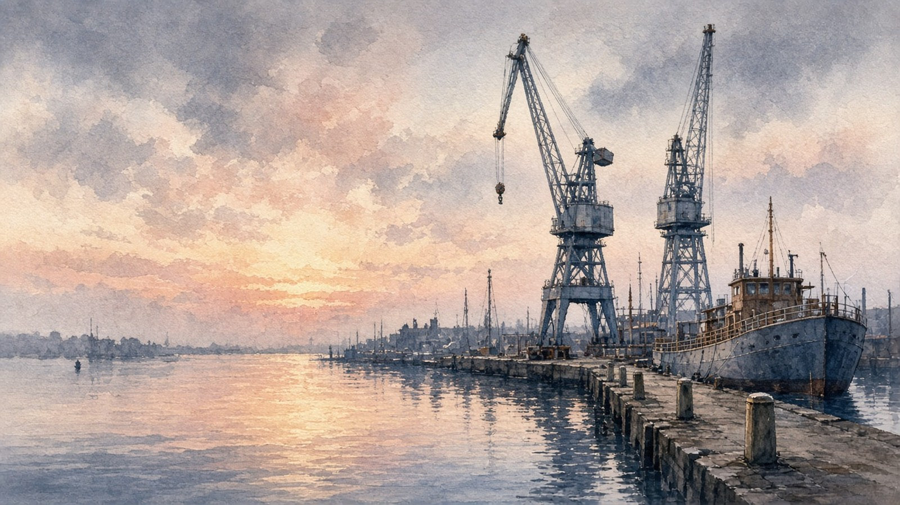

Lobsyhoger onderwijs
Lobsyhoger onderwijsHbo Verpleegkunde · jaar 3K7R-M2D
Lobsyhoger onderwijs
Je hebt werkstijl en drijfveren afgerond en je interesses aangegeven. Ga nu door met waarden, of stop hier en ga later verder. Je antwoorden zijn bewaard.
40 van 80 stellingen
 Werkstijl
Werkstijl Drijfveren
Drijfveren Pauze
Pauze Waarden
Waarden Werkomgeving
WerkomgevingOnderdeel 3 · Waarden begint bij de haven